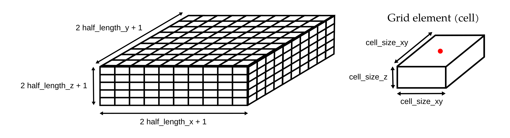

Documentation for the simulation grid
The simulation takes place on a rectangular 3D grid made of rectangular prism cells. An illustration of the 3D grid is given below along with the representation of a grid element.
The grid is created by the Grid class by providing the maximum size in the XYZ directions (grid_size_x, grid_size_y, and grid_size_z, respectively) and the size of a grid element (cell_size_xy and cell_size_z).
Grid elements
The grid elements have equal size in the X and Y direction (cell_size_xy_), while their height (cell_size_z_) should be lower or equal than their lateral extent.
By convention, the origin of each cell is assumed to be in the centre of their top surface (red point in the illustration).
This is particularly important when associating 3D positions to cell indices.
Grid geometry
The extent of the grid in meter is:
- [-grid_size_x, grid_size_x] in the X direction, corresponding to 2 * half_length_x_ + 1 grid elements.
- [-grid_size_y, grid_size_y] in the Y direction, corresponding to 2 * half_length_y_ + 1 grid elements.
- [-grid_size_z, grid_size_z] in the Z direction, corresponding to 2 * half_length_z_ + 1 grid elements.
The grid is therefore centred in 0.
Note that the right-hand rule is used with the Z direction pointing upward.